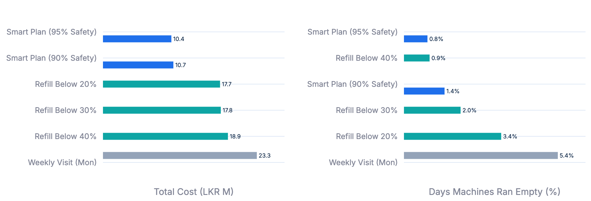
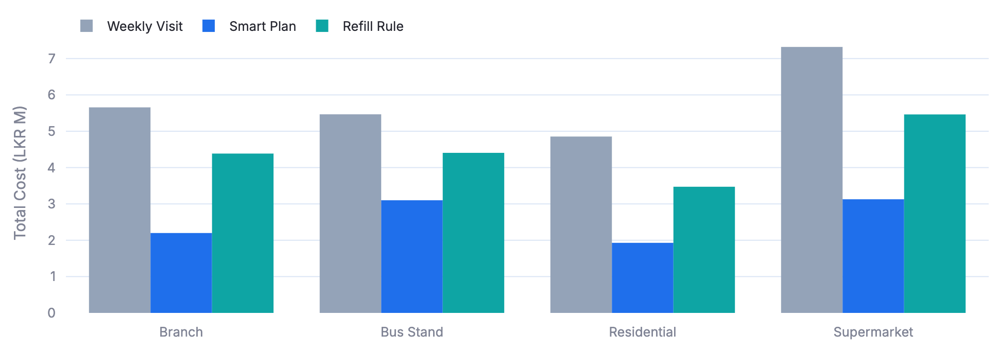
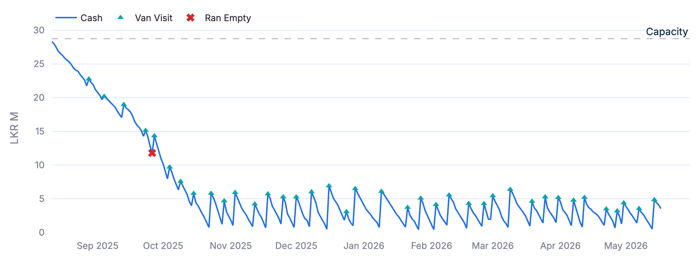
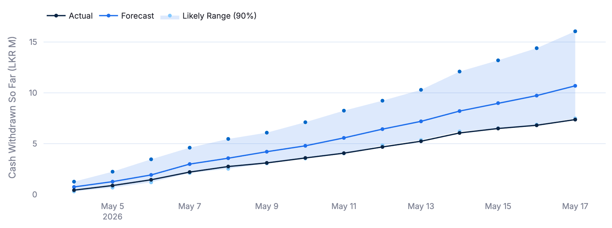

Cash planning for ATMs and CRMs, driven by forecasts.
Banks fill cash machines on simple rules. This project predicts how much cash each machine will need and plans the cheapest van visits. Tested on 280 days of data, it cut cost by 35 to 42 percent.

The Problem
A bank pays a security company to bring cash to its machines in armoured vans. Every day, for every machine, someone must decide: send a van or not, and how much cash to load.
- Too little cash. The machine runs empty. Customers leave, and an emergency van costs double.
- Too much cash. Money sits in the machine. The bank could have earned interest on it.
- Every visit costs money. A van trip to one machine costs around LKR 15,000.
- Simple rules miss the calendar. Poya days, Avurudu and salary week change demand, and vans do not run on holidays.
Words on This Page
- ATM
- A machine that only gives out cash.
- CRM
- Cash recycler machine. It gives out cash and also takes deposits, so it can get too full.
- Van visit
- A trip by the cash company to load cash into a machine or take cash out.
- Idle cash
- Cash that sits in a machine overnight. It costs the bank about 8% a year in lost interest.
- Ran empty
- A day when a machine could not give customers all the cash they wanted.
- LKR M
- Millions of Sri Lankan rupees.
The Solution
We call it the smart plan. It works in three steps, every evening, for every machine.
Forecast
Predict how much cash customers will take over the next 14 days, as a range.
Plan
Choose the visit days and the notes to load, at the lowest total cost.
Act and repeat
Send only tomorrow's decision. Plan again the next evening with fresh data.
How the Smart Plan Decides
Over the next 7 days, customers will most likely take LKR 7.0M.
We are 95% sure it will stay below LKR 8.6M.
- A range, not one number. A single guess is wrong half the time. The range tells the plan how much extra cash keeps the machine safe.
- 95% safety. The plan loads enough for the high end of the range, not the middle. So the machine runs empty on very few days.
- Lowest total cost. More visits cost more in fees. Fewer visits mean more idle cash. The plan finds the cheapest balance.
- Each note type on its own. An ATM holds 5000, 1000 and 500 notes in separate boxes. The plan fills each box by what customers take from it.
- Knows the calendar. No visits on Poya days and public holidays, and orders go in one day ahead. Before a long weekend, it loads earlier.
- CRMs too. For machines that take deposits, the plan can also send a van to take cash out before the vault is full.
The Data
The project uses these two data sets.
UK ATMs (real data)
Daily withdrawals from 111 real ATMs in the UK, 1996 to 1998, from a public research data set (NN5). Amounts are converted to rupees.
Used to check that the method works on real behaviour.
Sri Lanka (simulated)
The same data, reshaped into a Sri Lankan network: dates moved to 2024 to 2026, Avurudu, Vesak, Poya days and salary week added, 35% of machines turned into CRMs.
Used to show the full Sri Lankan use case.
How We Tested It
We replayed 280 past days, one day at a time, as if the bank had used each strategy. Each strategy only saw data up to that day, never the future.
Smart plan
Our method: forecast plus planning, as described above. Tried at 90% and 95% safety.
Refill rule
Send a van when cash drops below a set level, and fill the machine to the top. Tried at 20%, 30% and 40%.
Weekly visit
A van fills every machine to the top on the same day each week, needed or not.
The best simple rule is the cheapest of the refill rules and the weekly visit. The smart plan is compared against it, so the comparison is fair.
Same rules for everyone
- 10 machines per data set, picked at random.
- Same machine sizes, holidays and one-day order time.
- If a machine runs empty, an emergency van comes the next day.
- The first 14 days are not counted, so every strategy starts settled.
What counts as cost
| Cost | Amount used |
|---|---|
| Planned van visit | LKR 15,000 per visit |
| Emergency van visit | LKR 30,000 per visit |
| Idle cash | 8% a year on cash left in the machine overnight |
| Machine ran empty | LKR 25,000 per day, for unhappy customers and lost fees |
These amounts are estimates. A bank would replace them with its own figures.
Results
Total cost over the replayed days, for all 10 machines together.
| Data set | Smart plan | Best simple rule | Cost saving | Days a machine ran empty |
|---|---|---|---|---|
| Sri Lanka (simulated) | LKR 10.36M | LKR 17.73M | 41.6% | 0.83% vs 3.42% |
| UK ATMs (real data) | LKR 7.30M | LKR 11.31M | 35.4% | 0.23% vs 0.00% |
On both data sets, the best simple rule was "refill when cash drops below 20%". The weekly visit was the most expensive: LKR 23.30M on the Sri Lanka data, with 103 emergency visits.
Forecast accuracy
How far the forecast for the next 14 days was from what really happened, on average. Lower is better.
| Data set | Our forecast | Best simple forecast |
|---|---|---|
| Sri Lanka (simulated) | LKR 1.96M | LKR 2.26M |
| UK ATMs (real data) | LKR 1.63M | LKR 1.52M |
The best simple forecast is the average of the same weekday over the last four weeks.
Results in Charts
The same results, as the dashboard shows them. Click a chart to enlarge it.

Cost and empty days of every strategy
Each bar is one strategy. The left chart shows total cost, the right chart shows how often a machine ran empty. Shorter is better in both.
The smart plan (blue) is at the top of both charts: the lowest cost and the fewest empty days. The weekly visit (grey) is at the bottom.

Cost by machine location
The cost of each strategy, split by where the machines are: branch, bus stand, residential area or supermarket.
The smart plan is cheapest at every location, not just on average. The gap is largest at busy places like supermarkets.

Cash in one machine over time
The blue line is the cash inside one supermarket ATM under the smart plan. Triangles are van visits. The dashed line is the most the machine can hold.
The machine starts full. The plan lets the extra cash run down, then keeps it low with small, regular visits. A simple rule would fill it to the top every time.
The single red cross is a day when one note type ran out, even though other notes were still inside.

Forecast against what really happened
One machine, forecast on one day for the next two weeks. The blue line is the most likely total cash taken. The light band is the likely range. The dark line is what customers really took.
Here customers took less than the most likely value, but stayed inside the band. The plan loads enough cash for the top of the band, so the machine did not run empty.
What We Found
About cash demand
- The week drives demand. Thursday is the busiest day, about 1.5 times an average day. Saturday is the quietest.
- December is the busiest month and January the quietest.
- Demand rises about 7% around the end of the month, when salaries are paid.
- Demand grew about 7.6% a year in the real data.
- Machines fall into three groups: steady ones, busy ones with big swings, and a small group with a different weekly pattern.
About the plan
- Most of the saving comes from less idle cash. On the Sri Lanka data, machines held LKR 4.0M on average under the smart plan, against LKR 18.1M under the best rule.
- The smart plan visits more often but loads less each time. The interest saved is much larger than the extra fees.
- Simple rules fill to the top, but the small 1000 and 500 note boxes still run out between visits. Planning each note type fixed this: ATMs ran empty on 0.8% of days instead of 5.7%.
- CRMs also cost less (17%), but ran empty on a few days, where the refill rule had none.
- A weekly visit cannot keep up with busy machines. It needed 103 emergency visits.
About the forecast
- On the Sri Lanka data, our forecast beat every simple method, by 8% for tomorrow up to 27% for the next week.
- On the real UK data, the weekly pattern is so regular that a simple four-week average is hard to beat.
- The real value of our forecast is the range. It tells the plan how much safety cash to keep.
- The "95% safe" level really covered about 93% of days. Close, but slightly optimistic.
Was It Successful?
Lower cost. 35 to 42 percent cheaper than the best simple rule.
Fewer empty machines on the Sri Lanka network: 0.8% of days instead of 3.4%.
Better forecasts. Clearly better on the Sri Lanka data. On real UK data the most likely value is close to a simple weekly average.
No empty machines on real data. A few empty days (0.2%), against none for the best rule, but at a much lower cost.
Runs on a laptop. Each step finishes in under 5 minutes. 71 automated tests check the code on every change.
Dashboard
A web dashboard shows the results to a cash planning team. Click a screenshot to enlarge it.


Architecture
Each step reads the previous step's results, saves its own, and stops. Nothing runs in the background.
Built with Python, pandas, DuckDB, PySpark, LightGBM, statsforecast, PuLP, MLflow, Streamlit and Plotly.
Technology Choices
| Need | Choice | Why |
|---|---|---|
| Storage | Parquet + DuckDB | SQL on plain files. No database server to run. |
| Preparing training data | PySpark | Each day becomes 14 training rows. Spark scales this to larger networks. |
| Forecasting | LightGBM | Predicts a range, not only one number, so the plan can keep safety cash. |
| Simple forecasts to compare with | statsforecast | Standard methods the model must beat to be worth it. |
| Planning | PuLP + CBC | Finds the cheapest plan that follows every rule. Free to use. |
| Keeping track of experiments | MLflow | Saves every run's settings and scores, so runs can be compared. |
| Dashboard | Streamlit + Plotly | Built in Python. Reads the saved results directly. |
| Checking data and settings | pydantic + pandera | Wrong settings or broken data stop the run early. |
Limitations
- The Sri Lanka data is simulated. It is built from UK data with assumed holidays, locations and note mix. The forecast learns some of those assumptions back, so results there look better than they would in real life.
- The real data is old. It covers UK ATMs from 1996 to 1998.
- Costs are estimates. Visit fees, interest and penalties are not real bank figures.
- Small test sample. 10 machines per data set, to keep each run short.
- Not live. It runs on saved data. It does not connect to real machines or a cash company.